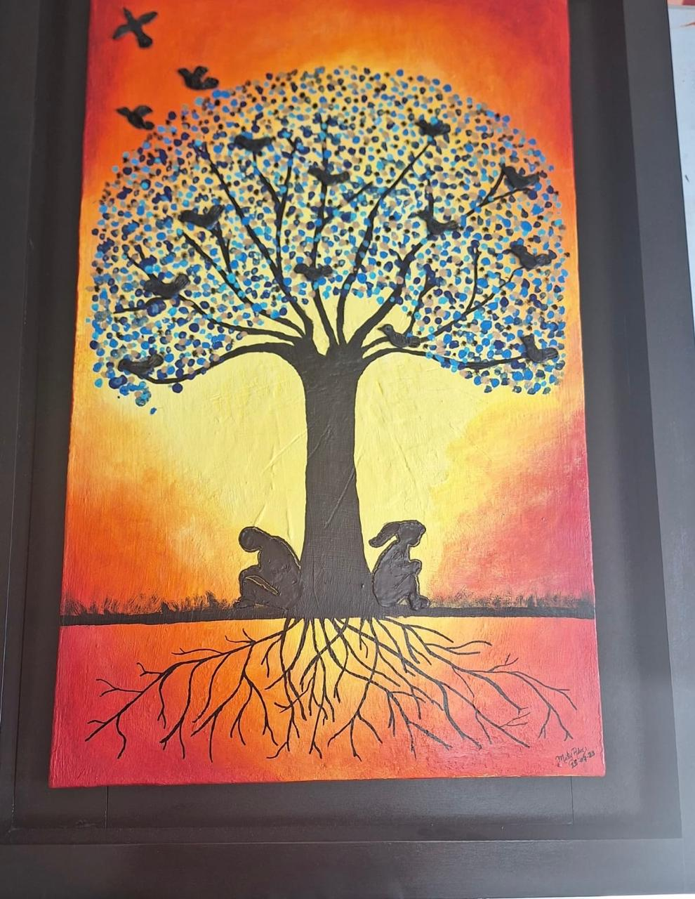

El arte puede ser una vía para explorar y expresar experiencias individuales, estimular la imaginación, mejorar la capacidad de empatía y promover la comprensión de diferentes perspectivas y realidades.
El arte contemporáneo es el arte de nuestro tiempo, que refleja o guarda relación con la sociedad actual.
El arte como el amor, es abstracto. Los dos involucran un sentimiento profundo y recíproco, no se puede amar sin tener a alguien a quien expresar ese amor.
La abstracción no representa «cosas» concretas de la naturaleza sino que propone una nueva realidad. Propone un «arte puro» mirando más allá de nuestra realidad.
El arte abstracto existe independientemente de la realidad, la aleja. El arte abstracto no representa nada en realidad.
Esto es, como una reducción expresiva en la que cada línea cuanto más esteneográfica sea, más expresiva convierte a esta reducción. Así la caricatura se convierte con el adjetivo esteneográfico que se le añade en una escritura (un contenido), pero una escritura reducida únicamente a los trazos estrictamente necesarios.